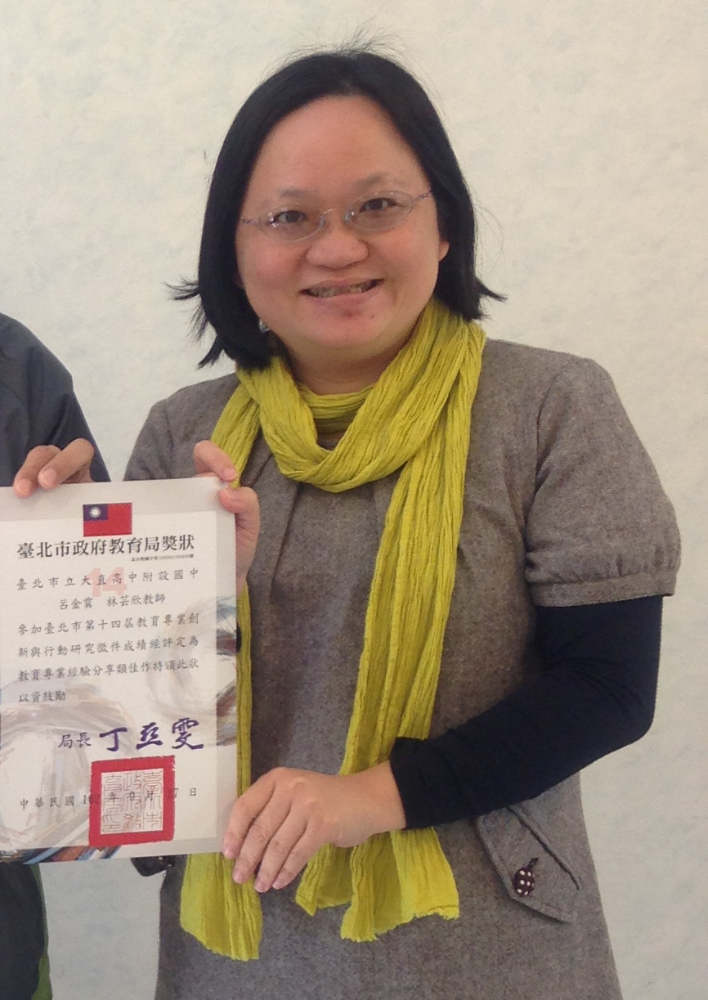

關於臺北市立大直高中這檔事
他...是林湧順
他的辦學理念是:
1.行政效能：營造溫馨的校園氛圍，行政充分支援教學。
2.教師教學：推動教師專業社群，鼓勵跨領域共備課程。
3.校園營造：強調友善的環境，建構數位、科技與人文並重的校園。
4.資源整合：社區資源導入學習系統，強化家長後勤資源。
但我跟他不熟，而且到底為甚麼他的簽名長得像
華康娃娃體
而這位是...他的秘書
我根本
完全沒
見過她

然後這是...學務處
雖然他們有一堆功能，但我只請過假和把曠課消掉而已。
而這就是我所知道的臺北市立大直高中